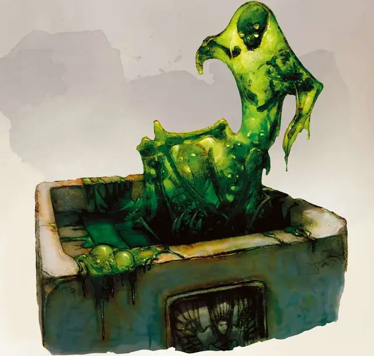

Порождение облекса
Oblex Spawn
Крошечная Слизь, обычно законно-злая

Класс Доспеха 13
Хиты 18 (4к4 + 8)
Скорость 20 футов
| мод | спас | ||
|---|---|---|---|
| СИЛ | 8 | −1 | −1 |
| ЛОВ | 16 | +3 | +3 |
| ТЕЛ | 15 | +2 | +2 |
| мод | спас | ||
|---|---|---|---|
| ИНТ | 14 | +2 | +4 |
| МДР | 11 | +0 | +0 |
| ХАР | 10 | +0 | +2 |
Иммунитет к состояниям ослепление, сбивание с ног, очарование, глухота, истощение
Чувства слепое зрение 60 футов (слеп за пределами этого радиуса), пассивное Восприятие 12
Опасность 1/4 (50 опыта)
Бонус мастерства +2
Среда обитания Болото, Город, Подземье
Особенности
Аморфный. Облекс может перемещаться сквозь пространство шириной в 1 дюйм без протискивания.
Боязнь огня. Если облексу причиняется урон огнём, то он, до конца своего следующего хода, совершает с помехой броски атаки и проверки характеристик.
Необычная природа. Облекс не нуждается во сне.
Действия
Ложноножка. Рукопашная атака оружием: +5 к попаданию, досягаемость 5 футов, одна цель. Попадание: 5 (1к4 + 3) дробящего урона плюс 2 (1к4) урона психической энергией.
Описание
“Свежеватели разума проводили всевозможные отвратительные эксперименты на разных планах существования, не особо задумываясь о последствиях. Здесь, я полагаю, вмешалась другая сущность –Джуиблекс.”
— Морденкайнен
“Облекс желает воспоминаний, но не преследует цель создавать их. Облексы жаждут воспоминаний и личностных черт, потому что они пусты без подобной пищи. Таким образом, они служат своим создателям – иллитидам. Облекс, прислуживая старшему мозгу, предоставляет всё необходимое для свежевателей разума, чтобы найти жертв себе по вкусу.”
— Морденкайнен
После экспериментов на слизи, желатиновых кубах и студнях, которыми кишат глубины Подземья, свежеватели разума вывели особый вид слизи. Облекс – слизь, способная атаковать разум других существ. Эти лужи слизи - хитрые охотники, которые питаются мыслями и воспоминаниями. Чем острее ум, тем вкуснее еда, поэтому облексы охотятся на цели, которые с большей вероятностью окажутся умными, такие как волшебники и другие заклинатели. Когда подходящая пища оказывается в пределах досягаемости, облекс вытягивает свое тело вверх, чтобы поглотить свою жертву. Удаляясь, он опустошает разум существа, оставляя его жертву сбитой с толку — или мёртвой.
Когда облексы поглощают мысли, иногда убивая свою добычу, они могут сформировать странные копии своих жертв, что помогает им добывать ещё больше страдальцев для своих мрачных хозяев.
Порождение облекса
Облекс поглощает воспоминания не только для того, чтобы поддерживать своё существование, но и для порождения новых облексов. Каждый раз, когда он полностью высасывает воспоминания существа, облекс получает и личные качества, исковерканные отвратительной природой облекса. Чем больше воспоминаний облекс крадёт, тем больше он становится, до той поры, пока ему не приходится излить из себя накопленную часть, иначе он тронется умом. Таким образом, появляется новый облекс.
Порождениям облексов не хватает способностей их старших сородичей. Они стремятся только питаться воспоминаниями и расти до тех пор, пока не смогут выдавать себя за своих жертв.